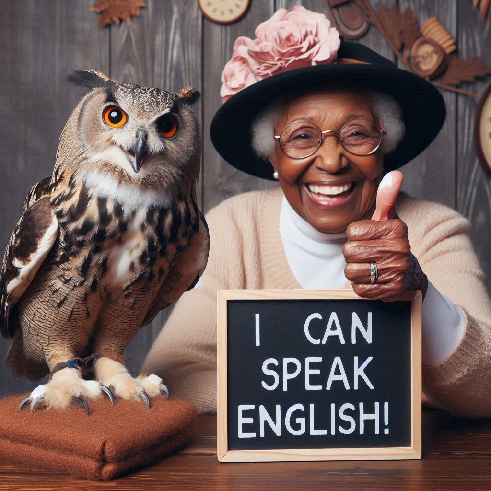
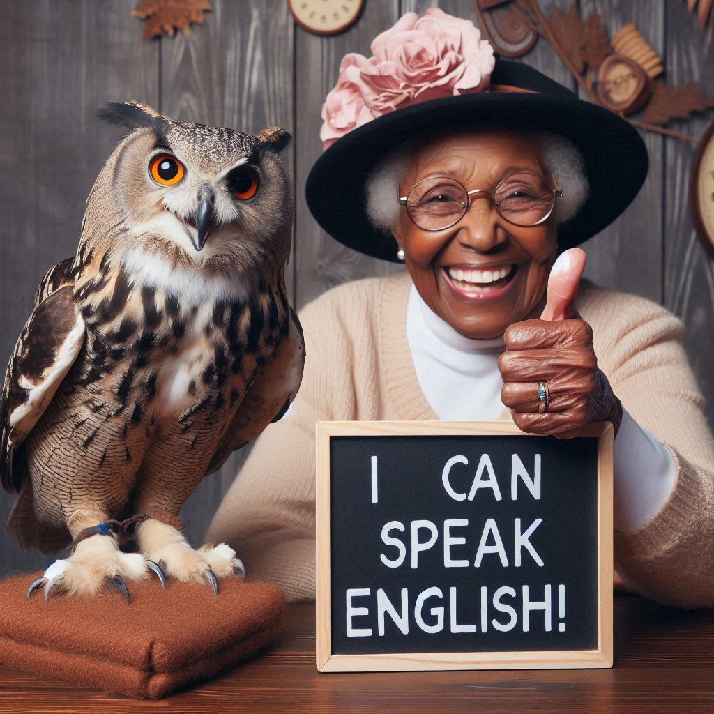

I manage my own blog. I have several granner tutorial availabe on my blog that you can go look at via the following link: (My Blog). I also regularly post book reviews and petry on my blog.
I a fully qaulfied langauge teacher. I studied at UCT univercity where I majored in English Afrikaans and Clasical Studies and did my honours in did my honours in Libary sience. I also have a TEFL(Teaching English as a Foreign Langauge) degree which I obtained for i-to-i.